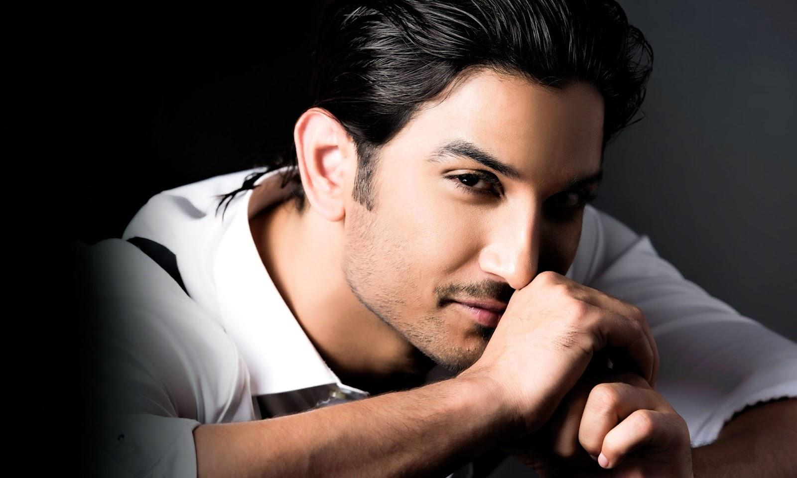
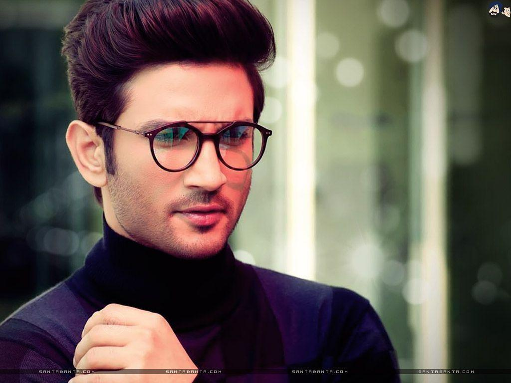
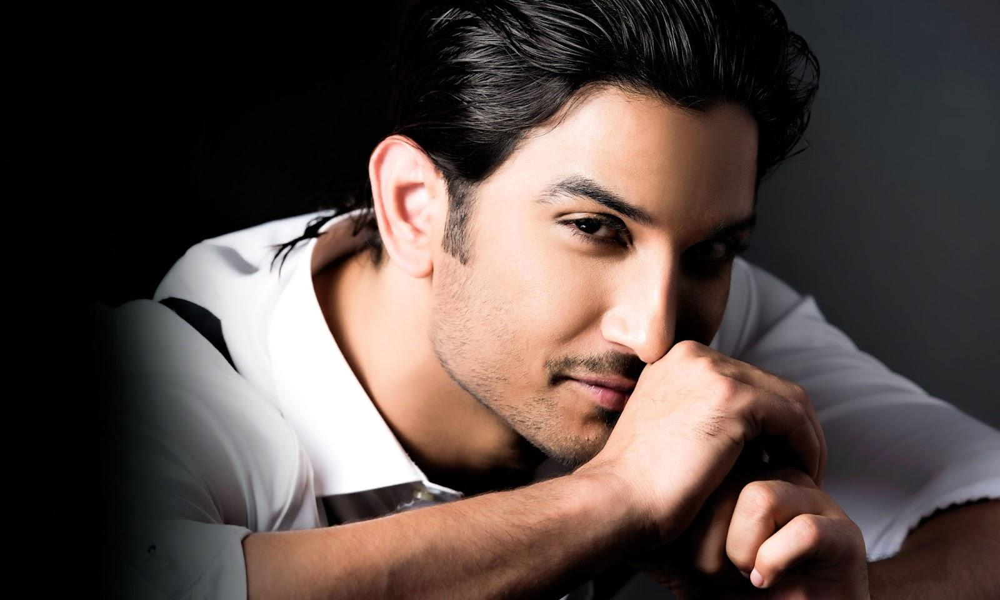
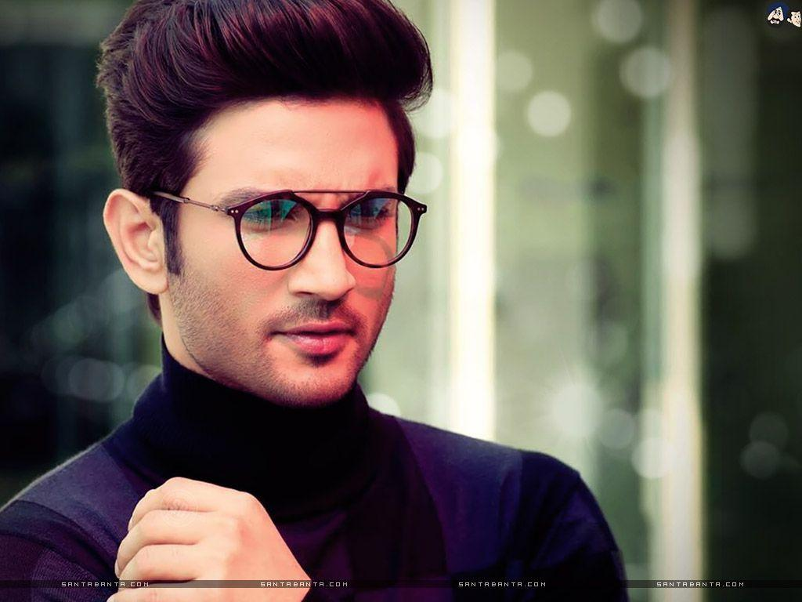

Sushant Singh Rajput (21 January 1986 – 14 June 2020) was an Indian actor known for his work in Hindi cinema.He starred in a number of commercially successful Hindi films such as M.S. Dhoni: The Untold Story (2016), Kedarnath (2018) and Chhichhore (2019).He received a Screen Award and was nominated for the Filmfare Awards on three occasions. He appeared on Forbes India's Celebrity 100 list twice since 2017.
Biography
Rajput began his acting career after dropping out of his engineering course at the Delhi College of Engineering and entering the theatre industry in Mumbai. He moved on to feature in Hindi television serials, his debut show was the romantic drama Kis Desh Mein Hai Meraa Dil (2008), followed by the lead role in the soap opera Pavitra Rishta (2009–2011). He made his film debut with the film adaptation Kai Po Che! (2013) which became a critical and commercial success. He followed up with his starring roles as a tourist guide in the romantic comedy Shuddh Desi Romance (2013) and the titular detective in the mystery film Detective Byomkesh Bakshy! (2015). Rajput's highest-grossing releases came with a supporting role in the satire PK (2014), and from the title role in the sports biopic of Mahendra Singh Dhoni. For his performance in the latter, he received his first nomination for the Filmfare Award for Best Actor.
Rajput died by suicide at his home in Bandra, Mumbai, in June 2020, aged 34. Various controversies surrounded his death. The Narcotics Control Bureau claimed Rajput had been using various people to obtain drugs since 2018 and filed abetment charges against them. Abetment to suicide charges were filed against his former girlfriend, while the Supreme Court refused to quash a case against his sister Priyanka which alleged she had supplied him psychotropic anti-depressants without proper medical consultation, using a forged prescription. His last film, Dil Bechara (2020), was released posthumously on the streaming platform Hotstar.
Positive Lessons to Learn from Sushant's Life
- Fight for your Dreams
- Living in the Moment
- Habit of Happiness
- Learning never Stops
- Give back to the Community
Gallery
 


